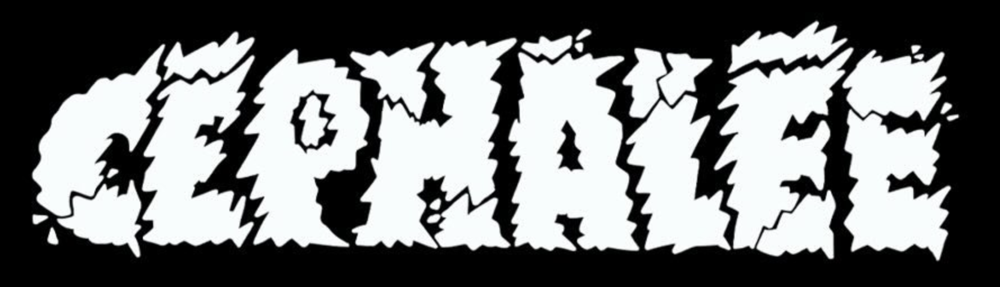
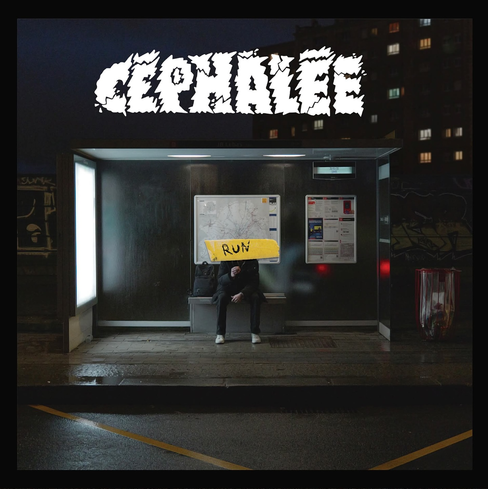

Ranting and raving about nonsense

RUN - disponible le 24/05/2025
Céphalée est un trio basé à Lille dans le Nord de la France.
Les trois membres évoluent dans les milieux musicaux alternatifs locaux.
Leur musique est très influencée par les scènes modernes, ce qui apporte au projet
des sonorités variés allant du post-hardcore à la musique progressive,
en gardant une énergie punk.
PROCHAINES DATES
HEMO ROCK FEST
24/04 - LA BRATCAVE
RELEASE PART EP
24/05 - LA MALTERIE
+ GUESTS